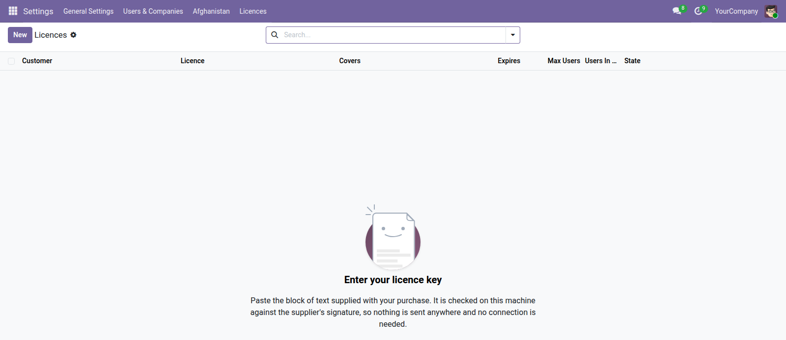

<section style="padding:32px 0;font-family:Roboto,Helvetica,Arial,sans-serif;color:#2b3a34;">
  <div style="max-width:900px;margin:0 auto;padding:0 24px;">

    <p style="font-size:12px;letter-spacing:.14em;text-transform:uppercase;color:#0b6b57;font-weight:600;margin:0 0 10px;">Administration</p>
    <h1 style="font-size:40px;line-height:1.1;margin:0 0 14px;font-weight:700;">Licence Keys</h1>
    <p style="font-size:19px;line-height:1.55;color:#4c5a55;max-width:640px;margin:0 0 28px;">Offline licence verification for commercial Odoo modules. The customer pastes a signed key, and it is checked on their own machine against the supplier's public key.</p>

    <div style="background:#f6f7f5;border-left:3px solid #0b6b57;padding:18px 22px;margin:0 0 32px;font-size:16px;line-height:1.6;"><strong>Nothing is sent anywhere.</strong> There is no licence server to call, nothing to break when a customer's connection does, and no telemetry leaving their database. That matters where connectivity is unreliable — and to anyone who would rather their ERP did not phone home.</div>

    <div style="margin:0 0 34px;">
      
      <div style="font-size:13px;color:#75837d;padding-top:8px;">The licence, every field read out of the signed key</div>
    </div>

    <h2 style="font-size:24px;margin:0 0 16px;font-weight:600;">Nothing can be edited into it</h2>
    <p style="font-size:16px;line-height:1.65;color:#4c5a55;margin:0 0 30px;">Raising the user limit by hand breaks the signature and the licence is refused. Every field on the screen — who it is for, what it covers, when it expires, how many users — is read out of the signed payload rather than typed in.</p>

    <h2 style="font-size:24px;margin:0 0 16px;font-weight:600;">What happens when it lapses</h2>
    <table style="width:100%;border-collapse:collapse;margin:0 0 30px;font-size:15px;">
      <thead><tr style="background:#edf0ec;">
        <th style="text-align:left;padding:10px 14px;border-bottom:1px solid #dce1db;">When</th>
        <th style="text-align:left;padding:10px 14px;border-bottom:1px solid #dce1db;">What the customer sees</th>
      </tr></thead>
      <tbody>
        <tr><td style="padding:9px 14px;border-bottom:1px solid #eef1ed;">30 days before expiry</td><td style="padding:9px 14px;border-bottom:1px solid #eef1ed;">a countdown in the corner of the screen</td></tr>
        <tr><td style="padding:9px 14px;border-bottom:1px solid #eef1ed;">Expiry, and 30 days after</td><td style="padding:9px 14px;border-bottom:1px solid #eef1ed;">everything keeps working; the countdown continues</td></tr>
        <tr><td style="padding:9px 14px;border-bottom:1px solid #eef1ed;">After the grace month</td><td style="padding:9px 14px;border-bottom:1px solid #eef1ed;">covered modules stop accepting <strong>new</strong> work</td></tr>
      </tbody>
    </table>

    <h2 style="font-size:24px;margin:0 0 16px;font-weight:600;">It never stops showing old work</h2>
    <p style="font-size:16px;line-height:1.65;color:#4c5a55;margin:0 0 14px;">Reading, printing and exporting keep working whatever the licence says, so every payslip, contract and report already produced stays available permanently. The data is the customer's.</p>
    <p style="font-size:16px;line-height:1.65;color:#4c5a55;margin:0 0 30px;">Holding it hostage would turn a late renewal into a dispute. Refusing new work is enough pressure, and it is pressure the customer can relieve by paying.</p>

    <h2 style="font-size:24px;margin:0 0 16px;font-weight:600;">What this is not</h2>
    <p style="font-size:16px;line-height:1.65;color:#4c5a55;margin:0 0 14px;">It is not DRM, and does not pretend to be. Odoo modules ship as readable Python, so a determined person can edit the check out — which is equally true of every paid module on the App Store.</p>
    <p style="font-size:16px;line-height:1.65;color:#4c5a55;margin:0 0 30px;">The purpose is to make the licence <em>legible</em>. The customer can see what they bought, when it lapses and whether they have outgrown it; the supplier has something concrete to point at. Enforcement is contractual. This is what keeps honest customers honest and makes a renewal a conversation rather than an accusation.</p>

    <div style="border-top:1px solid #dce1db;padding-top:20px;font-size:14px;color:#75837d;">Odoo 19.0 Community · depends on <code>mail</code> only. Ed25519 signatures, verified with the <code>cryptography</code> library that ships with Odoo.</div>

  </div>
</section>
